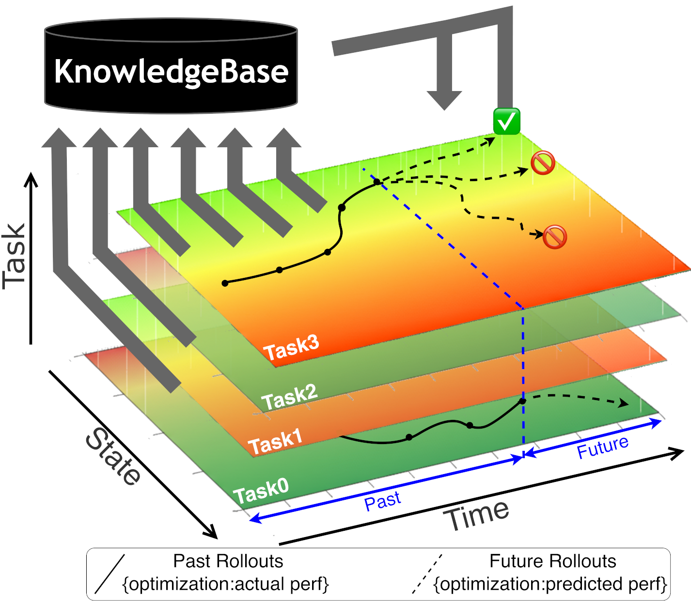
KernelBlaster: Continual Cross-Task CUDA Optimization via Memory-Augmented In-Context Reinforcement Learning
Kris Shengjun Dong, Sahil Modi, Dima Nikiforov, Sana Damani, Edward Lin, Siva Kumar Sastry Hari, Christos Kozyrakis.
A human being should be able to change a diaper, plan an invasion, butcher a hog, conn a ship, design a building, write a sonnet, balance accounts, build a wall, set a bone, comfort the dying, take orders, give orders, cooperate, act alone, solve equations, analyze a new problem, pitch manure, program a computer, cook a tasty meal, fight efficiently, die gallantly. Specialization is for insects.
Robert A. Heinlein, 《Time Enough for Love》
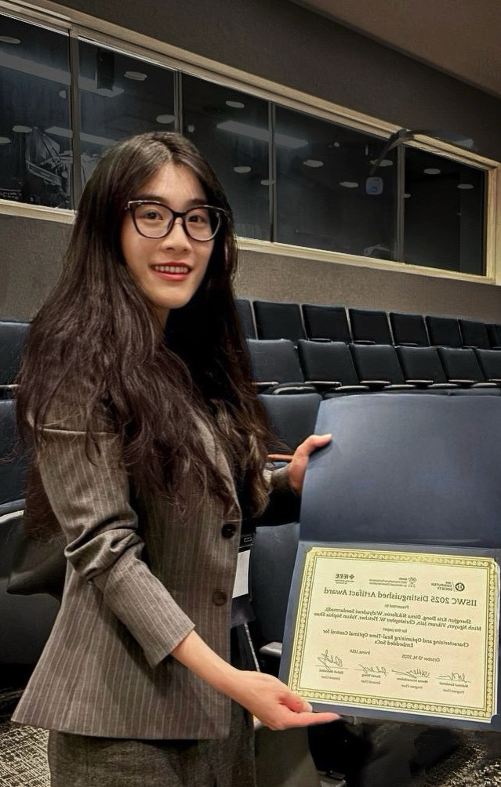
I'm currently a Ph.D. student in Computer Architecture at the University of California, Berkeley (EECS), co-advised by Prof. Sophia Yakun Shao and Prof. Christopher W. Fletcher.
My research focuses on systems for AI and AI for systems, with an emphasis on LLM-driven optimization for efficient, high-performance execution from the kernel level to the full system stack. I develop ICRL-based agentic flows for automating code generation and performance-power optimization, and integrate these methods into compilers and runtime systems for heterogeneous and edge architectures.
More broadly, I build infrastructure frameworks that support end-to-end hardware-software co-design, enabling rapid experimentation and cross-stack integration, while providing full-stack performance characterization and closed-loop performance optimization and validation. I am passionate about open-source ecosystems and reproducible research. My efforts have been recognized with the Distinguished Artifact Award at ISCA 2023 and the Distinguished Artifact Award at IISWC 2025.
NVIDIA released its first open-source agentic framework for CUDA optimization: KernelBlaster. It was a privilege to lead this effort and execute the vision with my amazing team!
We won the Distinguished Artifact Award at IISWC'25!
Our work on Characterizing and Optimizing Real-Time Optimal Control for Embedded SoCs was presented at IEEE IISWC'25!
My internship at Nvidia Architecture Research Group has been extended to Fall 2025!
I'm excited to join Architecture Research Group at Nvidia as a PhD Research Intern!
Our work on Certifiable Deep Learning for Reachability using a new Lipschitz Continuous Value Function was accepted by IEEE RA-L'25!
Our work on LLM-Aided Compilation for Tensor Accelerators was accepted by IEEE LAD '24!
I'm excited to pass my Ph.D. preliminary exam at UC Berkeley!
We organized a half-day tutorial on RoSÉ at IEEE MICRO!
I was granted a EECS Departmental Ph.D. Fellowship by UC Berkeley!
We won the ISCA Distinguished Artifact Award! (BWRC News)
Our work RoSÉ: A Hardware-Software Co-Simulation Infrastructure Enabling Pre-Silicon Full-Stack Robotics SoC Evaluation was presented at IEEE ISCA
I was featured on UC Berkeley EECS Medium!
Our work was presented at RoboARCH Workshop at IEEE MICRO!
Our work was presented at ILLIXR Consortium. (Recording)
I'm affiliated with the following groups:

Kris Shengjun Dong, Sahil Modi, Dima Nikiforov, Sana Damani, Edward Lin, Siva Kumar Sastry Hari, Christos Kozyrakis.
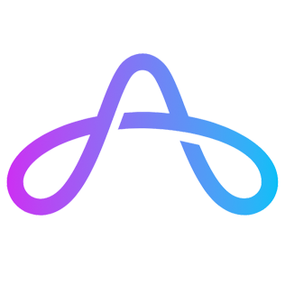
Kris Shengjun Dong, Dima Nikiforov, Widyadewi Soedarmadji, Minh Nguyen, Vikram Jain, Christopher Fletcher, Yakun Sophia Shao.
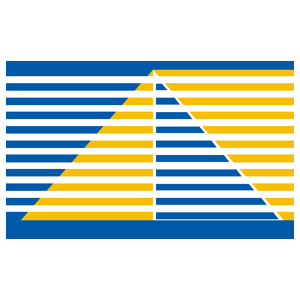
Dima Nikiforov, Kris Shengjun Dong, Chengyi Lux Zhang, Seah Kim, Borivoje Nikolic, Yakun Sophia Shao
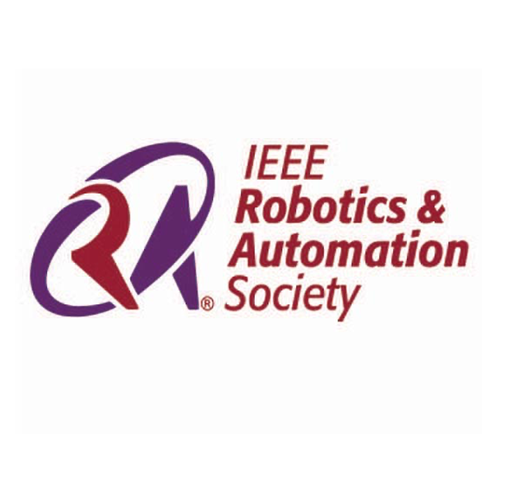
Jingqi Li, Donggun Lee, Jaewon Lee, Kris Shengjun Dong, Somayeh Sojoudi, Claire Tomlin
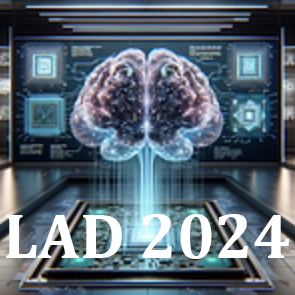
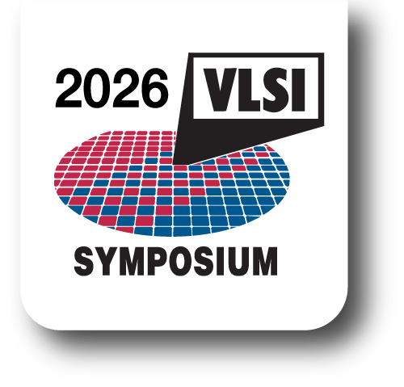
2nd RoboARCH Workshop, MICRO, IEEE, 2023.
Dima Nikiforov, Kris Shengjun Dong, Borivoje Nikolic, Yakun Sophia Shao.
1st RoboARCH Workshop Presentation, MICRO, IEEE, 2022.
Dima Nikiforov, Kris Shengjun Dong, Borivoje Nikolic and Yakun Sophia Shao
Oral Presentation, MICRO, IEEE, 2023.
Dima Nikiforov, Kris Shengjun Dong, Borivoje Nikolic and Yakun Sophia Shao.
Oral Presentation, ILLIXR Consortium, University of Illinois at Urbana-Champaign, 2022.
Dima Nikiforov, Kris Shengjun Dong, Borivoje Nikolic and Yakun Sophia Shao.
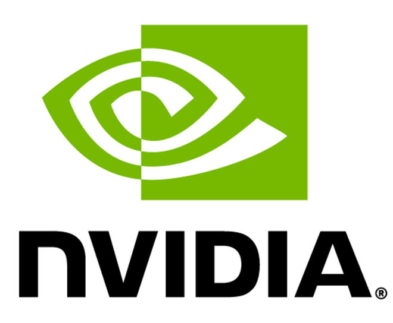
May 2025 - Nov 2025
I worked as a PhD Research Intern, at Nvidia's Architecture Research Group. My internship project tunrs into the first open-source agentic framework for CUDA optimization of Nvidia KernelBlaster. I have the pleasure of working with Christos Kozyrakis Siva Hari,and Sana Damani!
Dec 2021 - Dec 2022
At Tesla, I contributed to enabling vehicle remote control for long-distance tele-operation with confidential, unreleased features. Additionally, I optimized user flows for Tesla's human-machine interface by re-architecting the notification stack and enhancing the vehicle range analysis portal, improving efficiency and satisfaction for 3.6 million users.
Sep 2020 - Sep 2021
At Amazon, I initiated the "Alexa for Fulfillment Center" project, enabling Alexa to assist warehouse associates in completing tasks with appropriate instructions. Collaborating with Amazon’s Alexa (Speech) team, I defined project requirements to guide development and deployment efforts and conducted prototype evaluation using real-world data in diverse noisy warehouse environments.
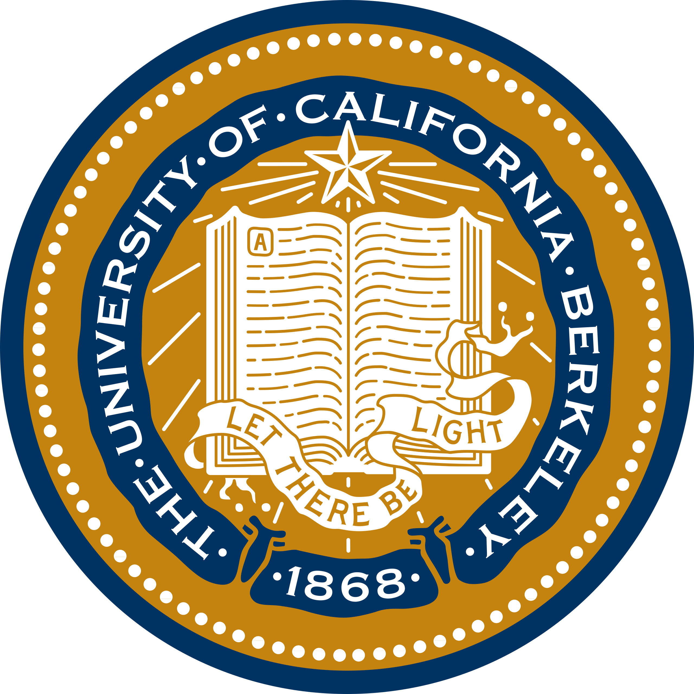
Ph.D. in Electrical Engineering and Computer Sciences
2022 - 2027
Master in Electrical Engineering and Computer Sciences
2021 - 2022
Bachelor of Science in Computer Science
Bachelor of Science in Mathematics
Bachelor of Business Administration in Finance
2016 - 2020
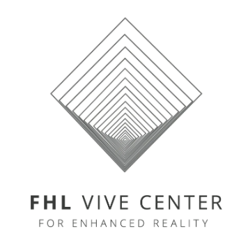
May 2023 - Sep 2023
I led a new lecture series “Introduction to Embedded Systems and Edge ML” at UC Berkeley’s Summer Campaign, Robot Open Autonomous Racing (ROAR) Academy . Job duties included designing the curriculum, organizing the program and lab sections, and introducing high school students to machine learning, robotic prototyping, and embedded systems programming on edge devices.
Spring 2026
I led a discussion section and graduate student reading group for CS 152/252A: Computer Architecture and Engineering at UC Berkeley, facilitating technical discussions on processor microarchitecture, instruction set design, and system-level performance analysis.
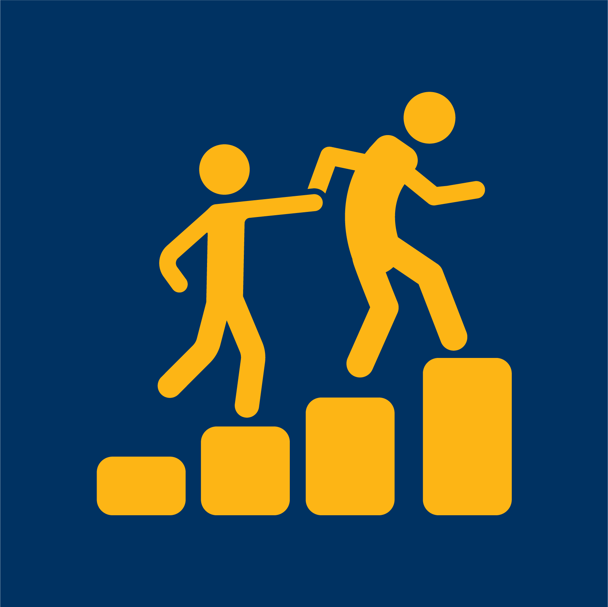
Minh Nguyen (Fall 2023 – Present): Undergraduate at UC Berkeley → MS in EECS at UC Berkeley
Widyadewi Soedarmadji (Winter 2023 – Present): Undergraduate at UC Berkeley → PhD in CS at Tsinghua University
Chun Deng (Jan 2023 – Winter 2023): Undergraduate at UC Berkeley → PhD at Stanford University
Resources that helped me in my research journey, along with recent blog posts I’ve written or been featured in:
Advice for Incoming EECS Freshmen: Tips for EECS undergrad students on majors selection, and early career choices.
Interview featured by UC Berkeley EECS: A personal story about how I found my direction in research.
I led a team of nine students and four advisors for the 8th- 9th Annual Women of Isenberg Conference, including virtual seminars and workshops, successfully raising $70,000 and maintaining brand identity through various promotional activities.
I coordinated career fairs and networking events to promote company culture and career opportunities, mentored students, and engaged with local colleges and community organizations to build candidate pipelines.
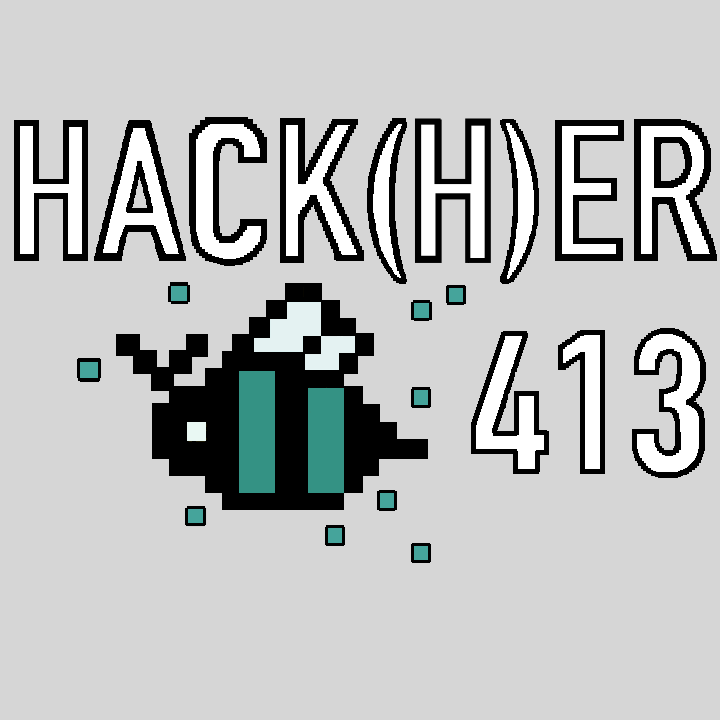
I directed a team to organize hackathons with diverse workshops and panels, supporting a community of over 1300 women and non-binary individuals in technology.
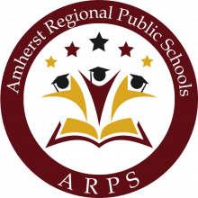
At the VELA Program of Amherst Regional Middle School, I organized afterschool clubs, assisted with curriculum implementation and homework support, monitored student progress, and participated in weekly reflection sessions and program evaluation.